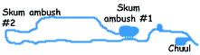

Having some spell slots left, Edwin cast Detect Scrying and Anticipate Teleportation. With a duration of 24 hours, these spells would provide some warning against another Demonic ambush. Katriana healed herself and Sabrina, and cast Freedom of Movement and Cure Light Wounds into the Ring of Spell Storing for Chaden to use the next day.
Finally, Edwin unwisely decided to examine the jars of unguent recovered from the Skum and the Drow alchemist. The potent contact poison killed him instantly. Or rather, mostly killed him. A quick Neutralize Poison spell from Grapther prevented his actual death, and Restoration cast the next morning restored him to life.
Choice Quotes
The Narrator
The next morning upon peeking out of the extradimensional space, some new arrivals were noted. Three Shriekers and two Violet Fungi had crawled down the hallway and taken up station at the edge of the water. This Chronicler isn't terribly interested in recounting yet another round by round description of a Shrieker combat, suffice it to say the party implemented Shrieker Elimination Plan A by dropping a Silenced coin and hacking away. Edwin harvested the poison sacs from the Violet Fungi.
The party prepared to enter the water.
The Next Combat: Room #20
The party descended into the water. Getting Sabrina to willingly submerge was easier than expected, owing to Katriana's long work with the animal. Grapthar took the lead, and therefore bore the brunt of the inevitable ambush. A large, lobster-like creature darted forth from a dark side-cave, and would have grabbed the dwarf if not for the Blur effect of the Cloak of the Sea. Chaden activated the Freedom of Movement spell stored in her ring and moved into help, and was rewarded with an enormous claw grasping at her midsection. The creature would have pulled her in to its jaws except that Freedom of Movement means automatically winning opposed grapple checks. Katriana moved behind the creature, flanking it but still not scoring any hits owing to its thick shell.
Grapthar and Chaden both missed the creature. Its Armor Class was simply insane. It latched onto Edwin, pulling him towards its paralyzing maw. Katriana reached a tentacle around to touch Edwin, casting Freedom of Movement and allowing him to escape.
Grapthar cast Divine Favor and Katriana Bulls Strength to gain some additional oomph to their next attack. Both of Chaden's attacks bounced off the creatures exoskeleton, but Edwin's Magic Missiles struck true. The Chuul missed Grapthar with both attacks. Bringing the combat rapidly to a close, Grapthar and Chaden each landed one hit for 26 points, then Katriana grasped its shell with four powerful tentacles. Augmented by the Bull's Strength, she tore its carapace in two.
Save for a few partially eaten Skum body parts, the creatures lair was empty. Katriana harvested its paralytic stingers for Edwin to process later. In the passage beyond a portcullis blocked the path. Grapther, Chaden, and Katriana (whose Bull's Strength was still active) had to take 20 to finally lift it, and Katriana carefully lowered it back into place once everyone had passed.
Given the communication difficulties the party was having underwater, Edwin cast Rary's Telepathic Bond.
Ambush #1
Past the portcullis the tunnel curved left, then right. As Chaden rounded the bend a trident snapped through a concealed crack in the wall, striking her. She backed up, but the trident struck out again. Edwin had just finished casting Arcane Eye, and sent it through the crack in the wall. In the chamber beyond were five Skum, peering through concealed peepholes and waiting for the party to cross. The party dashed through, taking minor damage, but then thought better of it as the Arcane Eye showed two Skum swimming away to warn others. Katriana cast Stone Shape to widen one of the cracks in the wall, then squeezed through. One of the remaining Skum clawed at her but she brushed past and rushed down the hallway after the fleeing foes. Using her water jet ability (as an Octopus), she easily outpaced them.
Edwin hit two of the Skum in the room with Color Spray, while Grapthar and Chaden charged in to deal with them. Edwin swam down the hall to help Katriana, drawing an attack of opportunity for minor damage from one of the Skum as he passed. By the time Edwin reached her, Katriana had dismembered the two opponents.
Chaden and Grapthar polished off the remaining foes in two rounds. Chaden had taken quite a bit of damage from the ambush and the various combats. She used two charges from the Wand of Siryl, plus Cure Serious Wounds from Katriana.
In the time remaining Edwin sent the Arcane Eye down the hallway. The tunnel curved around in an elongated circle before coming back to where the party stood.
Ambush #2: Round 1

The party moved slowly down the length of the tunnel, looking for secret doors. Suddenly ten Skum appeared from nowhere and attacked with complete surprise. Katriana took a total of 44 points of damage, Chaden took 25, Sabrina took 18, Edwin 19, and Grapthar 5. Katriana immediately jetted away to cast Cure Serious Wounds on herself. Chaden and Sabrina each killed one Skum before Edwin used Dimension Door with everyone to escape.
Ambush #2: Round 2
Itching for a fight, Grapthar cast Divine Favor and charged back toward the site of the ambush. Katriana cast a second Cure Serious Wounds on herself (shared with Sabrina), and Edwin cast another Cure Serious Wounds on her.
Ambush #2: Round 3
The party followed Grapthar. Two Skum bodies floated where they had been slain, but there was no sign of the rest. When they suddenly materialized again Chaden caught sight of the secret: all of the walls were illusions, which the Skum could simply swim through.
In the second surprise round of the combat Grapthar took 15 hit points of damage, Chaden took a total of 25, Edwin took 20, and Sabrina took 36.
Ambush #2: Round 4
Healed up and pissed off, Katriana cast Arc of Lightning to turn two Skum into crispy critters. Two Skum attacked Chaden and Grapthar, but the Blur effect of the Cloak of the Sea saved Grapthar from some of the damage. Chaden damaged one Skum and Sabrina killed another while Edwin cast Cure Serious Wounds on the badly hurt Chaden. Grapthar killed another Skum, and used his Cleave feat to take out another.
Ambush #2: Round 5
Chaden and Sabrina killed one of the two remaining creatures. The last one tried to hit Grapthar but was diverted by the Blur. Grapthar casually killed the creature.
The Narrator
All three remaining charges of the Wand of Siryl plus nine charges from the Wand of Cure Light Wounds were necessary to restore the party to health. Studying intently, Edwin finally saw through the illusion. Spellcraft told him it was a modified version of the Veil spell, which could be penetrated using True Seeing but was otherwise undetectable.